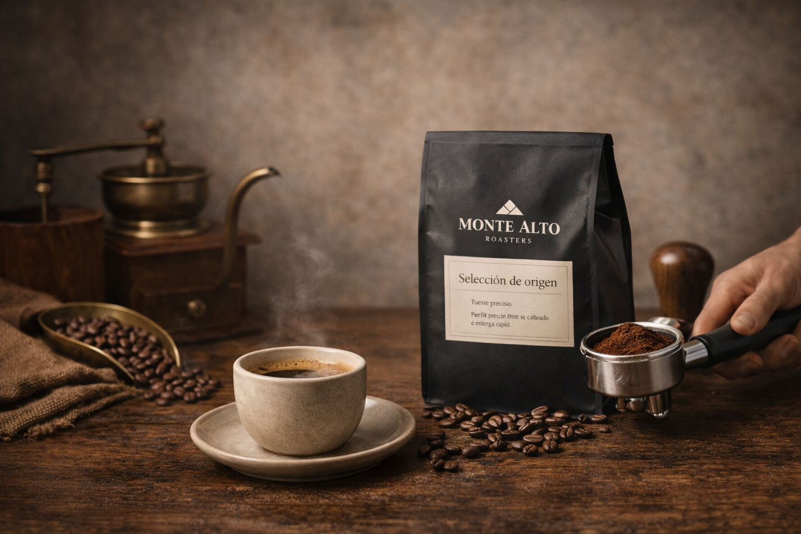
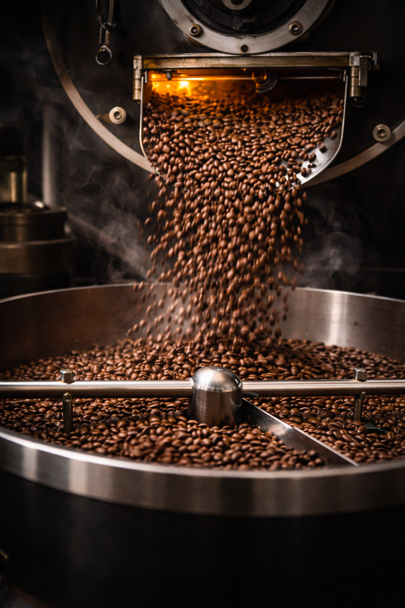

★★★★★
Producto excelente, envío rápido y una presentación impecable. Se nota el cuidado en cada detalle.
Andrea M.En Monte Alto Roasters trabajamos con cafés y blends cuidadosamente seleccionados para ofrecer una experiencia equilibrada, elegante y consistente en cada taza.

Una selección de cafés de origen y blends pensada para distintos perfiles de sabor, siempre con una curaduría cuidada y una presentación premium.
Nuestro plan de suscripción está pensado para quienes quieren descubrir nuevos perfiles de sabor con la comodidad de recibir una selección cuidada directamente en casa.
2 bolsas de café de origen + fichas de cata + envío preferente

Seleccionamos cafés por su perfil sensorial, su trazabilidad y su consistencia en taza. Cada referencia está pensada para ofrecer equilibrio, carácter y una experiencia de compra a la altura del producto.
Descubrir nuestra historiaUna comunidad que valora la calidad del producto, la consistencia en taza y una experiencia de compra sencilla y cuidada.
Producto excelente, envío rápido y una presentación impecable. Se nota el cuidado en cada detalle.
Andrea M.Muy buen equilibrio entre calidad, sabor y consistencia. El Espresso House Blend se ha convertido en mi favorito.
Javier T.La experiencia de compra es muy clara y el café llega perfecto. Marca muy cuidada de principio a fin.
Lucía R.